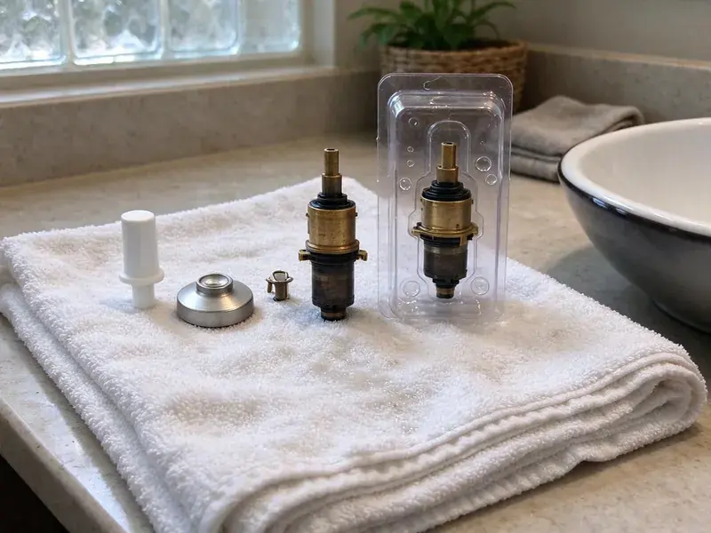

Toilet Repair in Draper, UT
Slow refill in Draper, UT? Our plumbers find the real cause and fix it with parts from the truck.
- No Surprise Charges
- Workmanship Warranty
- Flappers and Seals Stocked
- Licensed Plumbers

Local Toilet Repair in Draper, UT
Call (385) 543-4073 and a plumber can usually be there today.
Toilet Repair for Draper, UT Homes
BPK Plumbing works on gravity-fed toilets, pressure-assist units and dual-flush models in homes and rentals around Draper. Hard water leaves scale in the rim jets and siphon hole, so we clean those as part of a weak-flush repair. Sometimes the porcelain is the problem. When that happens, you hear it from us before you pay for parts that will not help.
Our expertise includes:
- Flushometer diaphragm repair for commercial restrooms
- Closet flange repair rings for base leaks
- Descale rim jets and the siphon jet

Additional Bathroom Plumbing Services in Draper, UT
From toilets to showers, our bathroom plumbing team in Draper, UT handles repairs, installs, and upgrades with tidy, code-compliant work.


Customers
Why Choose BPK Plumbing for Toilet Repair in Draper, UT?
We fix the part that failed and then check the three or four that usually fail next. It saves you from a second trip a month later when the fill valve quits right after we replaced the old flapper. Old tank parts tend to wear out together.
- Next-Failure Check, We point out parts that are close to failing before they quit.
- Accurate Diagnosis, We test the tank with dye and inspect the base before quoting.
- Fast Response, Overflowing toilets go to the front of the schedule.
Citywide Coverage
We repair toilets in every part of Draper, from older houses with cast iron drains to newer builds with PVC and plastic flanges. Every neighborhood gets the same stocked truck and the same flat pricing. Distance does not change the rate.
Experienced Team
Each technician is trained on gravity, pressure-assist and dual-flush toilets, plus the flushometer valves found in commercial restrooms. Training is ongoing. Manufacturers change flush valve designs every few years, and our plumbers keep up so a new TOTO or Kohler does not stump them.
Safety-First Approach
Rotted subflooring is something we show you before going further, since setting a toilet on soft plywood guarantees the seal will fail again. You decide what happens next. A small subfloor patch around the flange is often enough before the toilet goes back down.
Trusted Certified Draper Plumbing Services Professionals
At BPK Plumbing, we take pride in licensed, certified plumbing services throughout Draper, UT. Credentials matter in this trade. Every repair, install and maintenance visit follows strict safety and quality rules, and the plumbers doing the work carry recognized industry credentials.
Call Us Now PHCC Plumbing Contractor Recognition
PHCC Plumbing Contractor Recognition Better Business Bureau (BBB) Accreditation
Better Business Bureau (BBB) Accreditation Angi Certified Pro
Angi Certified Pro ISO 9001 Quality Management Certification
ISO 9001 Quality Management CertificationToilet Repair Services in Draper, UT
Commercial Toilet Repair in Draper
Office and retail restrooms take more flushes in a day than a house sees in a month, so the parts wear faster and fail harder. Most commercial toilets use flushometer valves instead of tanks, and those need diaphragm kits and vacuum breakers from time to time. We carry Sloan and Zurn kits. If downtime is a problem, we can come in before you open or after you lock up.

Clogged Toilet Solutions in Draper, UT
Paper towels, wipes, dental floss and toys cause most of the repeat clogs we clear, and none of them break down the way toilet paper does. The closet auger usually hooks them and pulls them out. If the toilet clogs again within a week, the problem is further down the line. Then we look at the branch drain and the main sewer, often with a camera.
Toilet Brands We Service in Draper
Kohler, American Standard, TOTO, Gerber and Mansfield make up most of the toilets we open, and each one uses its own flapper size or flush valve design. The wrong flapper will leak. We match the part to the model number stamped inside the tank and stock the common ones on every truck.
Cracked Tank and Supply Line Repair in Draper, UT
Braided supply lines last years, but the plastic nut on the toilet end can crack and a bulge in the braid means the inner hose is about to burst. We check every supply line on every visit. Bulges get replaced on the spot. If you still have a vinyl or solid plastic line, we change it to braided stainless before it lets go.
Flush Mechanism Repair in Draper, UT
A weak flush usually means the tank is not filling to the fill line, the chain has too much slack, or the flapper is closing before the tank empties. We bring the water up to the line stamped on the overflow tube and adjust the chain to about half an inch of slack. Handles break too. A loose or cracked handle is a five-minute swap.
Weak Flush and Clog Repair in Draper, UT
Needing two flushes on a regular basis usually comes down to scale in the rim jets, a clogged siphon jet, a partial blockage in the trapway, or a flush valve that does not open all the way. Gurgling in a nearby sink points to the vent. We clear the trap with an auger and treat the jets with a descaler. Some early 1.6 gallon toilets from the 1990s just flush poorly, and we will say so.
Running Toilet Fixes in Draper
Phantom refills, the tank topping itself off for a few seconds in the middle of the night, almost always mean a slow leak at the flapper. The water level drops until the fill valve kicks on again. Other times the refill tube sits too deep in the overflow pipe, which siphons the tank. We clip it above the water line.

Fill Valve Replacement in Draper
Old ballcock valves with a brass arm and a big plastic float are loud and slow to refill, and they tend to stick open when scale builds up in the ports. We swap them for an adjustable fill valve from Fluidmaster or Korky and set the height so the critical level mark sits at least an inch above the overflow. It is a twenty-minute job. You will notice the difference the first night, because the tank stops hissing.
Toilet Repair Near Me in Draper, UT
Phone calls get answered by a person who asks what the toilet is doing, whether it is running, rocking, leaking at the base or backing up. That helps us bring the right parts. Expect a clear time window. Before the truck leaves, you will already have a rough price range.
Near-me searches turn up a lot of call centers, and the plumber who arrives may never have seen your neighborhood before that day. The plumbers we send work for us directly from Draper, UT. They explain what failed before starting. You pay the price you approved, nothing added at the end.
BPK Plumbing at a Glance
- Licensed and insured plumbers serving Draper, UT
- 24/7 emergency service with same-day scheduling
- Upfront, flat-rate pricing before work begins
- 4.8-star rated by 470+ Utah customers
Draper Map
Draper Information
- Population
- 49,602
- Area codes
- 801/435/385
- Service area
- Draper and towns within a 40 mile drive
- Nearby
- Sandy, Lehi, South Jordan, Herriman
An arid climate with hot summers, cold winters and big daily temperature swings puts steady stress on plumbing across Utah. In a Draper, UT bathroom, a slow leak at the toilet base can soften the subfloor and feed mold you never see.
Expert Services
Reach out to BPK Plumbing for reliable plumbing work done by licensed pros in Draper, UT.
Our Specialized Plumbing Services in Draper, UT
At BPK Plumbing, we handle the full list of plumbing services across Draper, UT. From leak detection to full system installs, our team works fast and charges fair prices on homes and commercial properties alike. Here are the core services we offer:


How a Toilet Repair Visit Works in Draper, UT
Here is how a toilet repair normally runs, from the first call to the last test flush.
Describe the Problem
Call (385) 543-4073 and tell us if the toilet is clogging or rocking. You get a price range before we arrive.
Diagnose and Price
Your plumber checks the tank, valves and seals to find the real cause, then quotes it.
Repair and Test
We replace the parts, flush it several times and check the base with a dry towel.
Frequently Asked Questions About Toilet Repair in Draper
Expect $120 to $250 for a simple flapper or handle job and $200 to $500 for a base reset or a clog that goes past the trap into the drain line. A broken flange adds a bit more. We quote a flat price once we see the toilet, before any work begins.
We do. Older homes still have Eljer, Briggs, Crane and Universal Rundle toilets, and while some of their flush valves take odd parts, adapters and universal kits cover a good share of them. We will tell you if a part is no longer made.
A loose chain or a float set too high is a fair DIY fix, and so is swapping a flapper if you buy the right size for your flush valve. Take the old one to the store. If the toilet still runs after that, the seat or the fill valve is usually the problem, and that is a good time to call BPK Plumbing.
Every repair BPK Plumbing does in Draper, UT carries a workmanship guarantee, and the parts carry their own manufacturer coverage on top of that. You will see the warranty terms in writing on the invoice. Keep it with your house papers.
Low water in the tank is the first thing we check, followed by a partly closed angle stop, scale in the rim jets, a clogged siphon jet and a partial clog in the trapway. Any one of those can do it. We test for each one before anything gets replaced, since a new flapper will not help a scaled jet.
Not for typical repairs like new tank parts or a fresh seal. Adding a toilet where there was none or changing the drain line is different, and permit rules depend on the local building department in Draper. We look up what applies to your address before we start.
Lift the tank lid and push the flapper down by hand, which stops more water from reaching the bowl right away. Then close the angle stop. It is the small valve on the wall behind the toilet, and it turns clockwise. With the water off, try a flange plunger on the clog, and call us if it does not clear.
Flapper and fill valve jobs take twenty to forty-five minutes. A full pull and reset on a new wax ring takes about an hour, and a flange repair adds another thirty to sixty minutes depending on what is under the floor. A clog past the trap can take longer.
What Our Customers Say About Our Plumbing Experts

Nathan E.
Our tankless heater kept throwing an error code and shutting off mid shower. The tech flushed the heat exchanger, which was full of scale, and replaced a bad flow sensor. Hot water has been steady for half a year now.
Water Heater Repair · Sandy, UT
Diane F.
My kitchen faucet had dripped for months and I finally got tired of hearing it at night. BPK Plumbing came out the next morning, replaced the cartridge and the O rings, and tightened a loose base that was letting water under the sink.
Faucet Repair · West Jordan, UT
Kevin O.
Before buying our house I paid for a sewer camera inspection. BPK Plumbing found a belly in the line that held standing water about forty feet from the cleanout. We used the video to get the sellers to fix it before closing.
Sewer Camera Inspection · Lehi, UT
Mark T.
The floor drain in our office break room backed up every few weeks. The plumber ran a cable, then put a camera down and found roots at a joint about thirty feet out. Seeing it on the screen made the decision easy.
Drain Cleaning · Herriman, UT
Megan L.
Our upstairs tub drained so slowly that every shower turned into a bath. BPK Plumbing pulled a wad of hair out of the stopper and then snaked the line past the trap. Three months later it still drains fast.
Drain Cleaning · West Jordan, UTKaren W.
After our third pinhole leak in copper, we stopped patching. BPK Plumbing gave us a written plan room by room and repiped the house in PEX while we stayed in it. The crew covered our floors every morning and cleaned up every night.
Repiping · Draper, UT